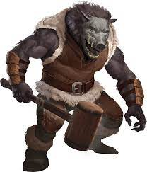
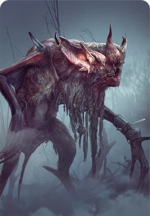
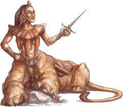
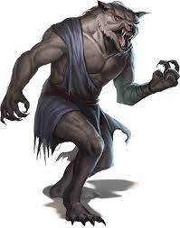
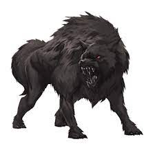

|  |
Homem-Javali |
11 |
80 |
perfurante e concussivo de armas não mágicas |
/ |
armas de prata |
Presa de javali |
|  |
Katakan |
13 |
110 |
Dano de concussão, corte e perfuração de armas não-mágicas |
Charme, Encantamento, Sono, Veneno |
/ |
garra de Lamia |
|  |
Lamia |
13 |
97 |
perfurante e concussivo de armas não mágicas |
Necrótico |
cortante, concussivo e perfurante de armas mágicas |
presa de vampiro |
|  |
Lobisomem |
11 |
70 |
Dano de armas não mágicas que não sejam de prata |
/ |
Armas de prata |
couro de lobo |
|  |
Worg |
13 |
50 |
/ |
/ |
/ |
dente de worg |